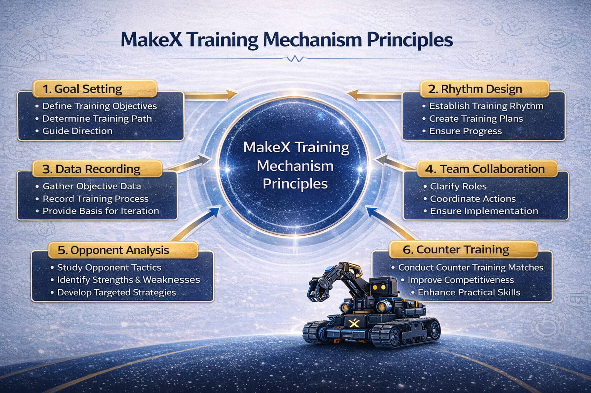

收集日期、训练主题、成功率、平均成绩、关键任务耗时和主要失误原因。
Training
执行与反馈机制
训练不是练得越多越好，而是要用数据、记录和复盘形成持续改进的闭环。
这一页重点放在训练闭环里的执行、记录、复盘和版本迭代，让内容更接近比赛实战。

执行与反馈先回答四个核心问题
复盘结果是什么、为什么出现、下次调整什么、谁负责验证。
每次只改少量关键项，改完立即验证，避免同时改太多失去判断依据。
把下次训练任务和验证标准提前写清楚，让每次调整都可追踪。
六个关键组成部分
目标设定
训练的起点是先明确训练为什么而进行，把结果目标、过程目标和能力目标同步建立起来。
- 结果目标：区域赛进入前八、模拟赛稳定达到目标分数、自动阶段形成得分优势。
- 过程目标：每周完整跑图次数、专项测试次数、关键任务成功率目标。
- 能力目标：独立解释策略、独立排查故障、比赛中完成明确分工协同。
节奏设计
建立“日常训练 - 每周复盘 - 阶段推进”的三级结构，让训练不是靠赛前冲刺，而是持续推进。
- 日常训练：训练准备、专项训练、实战跑图、训练复盘四步固定化。
- 每周训练：围绕成绩、效率、稳定性、团队协作四类指标做系统复盘。
- 阶段训练：规则搭建、专项强化、整场整合、赛前冲刺四阶段逐级升级。
数据收集
训练不是练得越多越好，而是要用数据、记录和复盘形成持续改进的闭环。
- 数据收集：日期、训练主题、成功率、平均成绩、关键任务耗时、主要失误原因。
- 复盘问题：结果是什么、为什么出现、下次调整什么、谁负责验证。
- 版本管理：每次只改少量关键项，改完立即验证，避免同时改太多失去判断依据。
团队协作
比赛中很多失败并不是机器人能力不够，而是角色不清、口令混乱、临场节奏失控。
- 角色分工：主操作手、副操作手、程序负责人、结构负责人、教练/队长职责清晰。
- 协同训练：固定口令、时间节点提醒、失误后切换、主副策略切换沟通长期强化。
- 核心目标：在任何变化下都能迅速配合，而不是只在理想状态下完成任务。
对手分析
高水平训练不能只练自己，还要持续研究主要竞争对手的打法、节奏、优势与弱点。
- 资料收集：比赛直播、公开视频、社交媒体片段、历届成绩、公开复盘。
- 分析维度：开局任务、中段切换、高风险任务时机、失误恢复、稳定性波动。
- 输出结论：形成重点对手档案，并转化为针对性的训练任务和比赛策略。
反制训练
对手研究的价值不是“看懂对手”，而是改变自己的准备方式，把分析结果变成可执行训练。
- 面对自动优势型：强化自动成功率、起步精度、失败补救速度和保底方案。
- 面对后程爆发型或稳定型强队：训练前中段建差、关键点提速和 A/B 策略切换。
- 固定安排：每周一次外部赛队分析会，每阶段一次重点对手研判。
标准训练闭环建议
每次训练
- 训练前：目标确认、设备检查、程序确认、记录表准备。
- 训练中：专项突破、实战模拟、数据收集、小步迭代。
- 训练后：复盘总结、问题分类、责任落实、下次任务确认。
每周训练
- 周目标明确，周中推进专项训练。
- 周末安排完整模拟赛与系统周复盘。
- 固定一次外部赛队分析，形成下周针对性任务。
每阶段训练
- 明确阶段目标，拆解关键问题。
- 实施专项突破并进行阶段测试。
- 判断是否进入下一阶段，并完成版本冻结或策略升级。
训练机制的核心，不是“多训练”，而是用数据、记录和复盘形成持续改进的闭环。